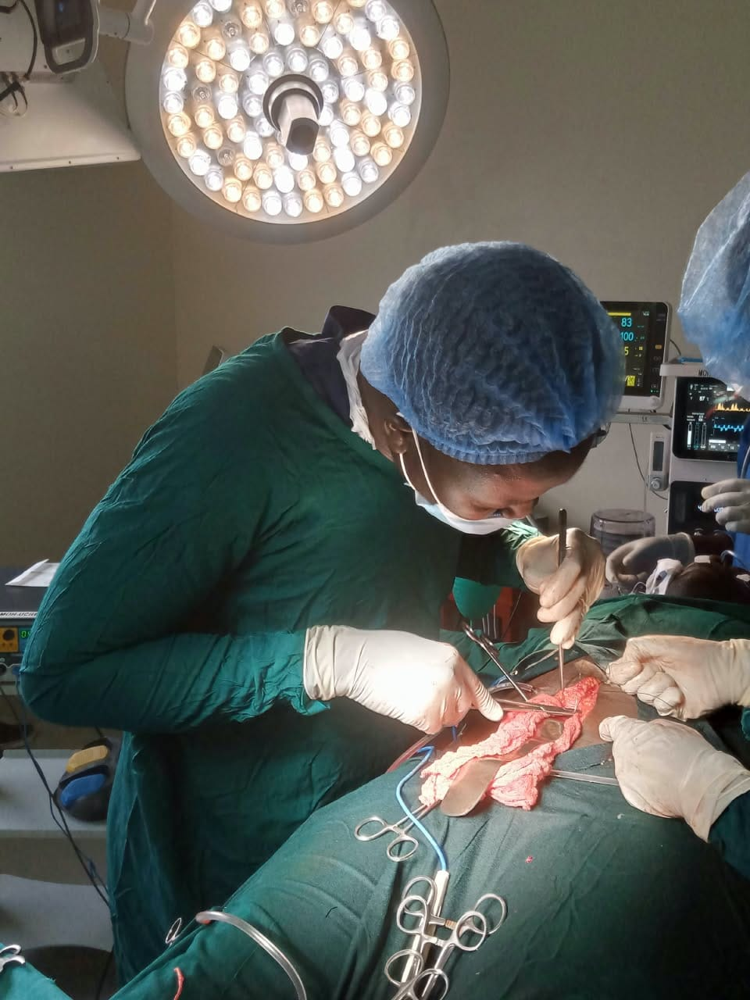
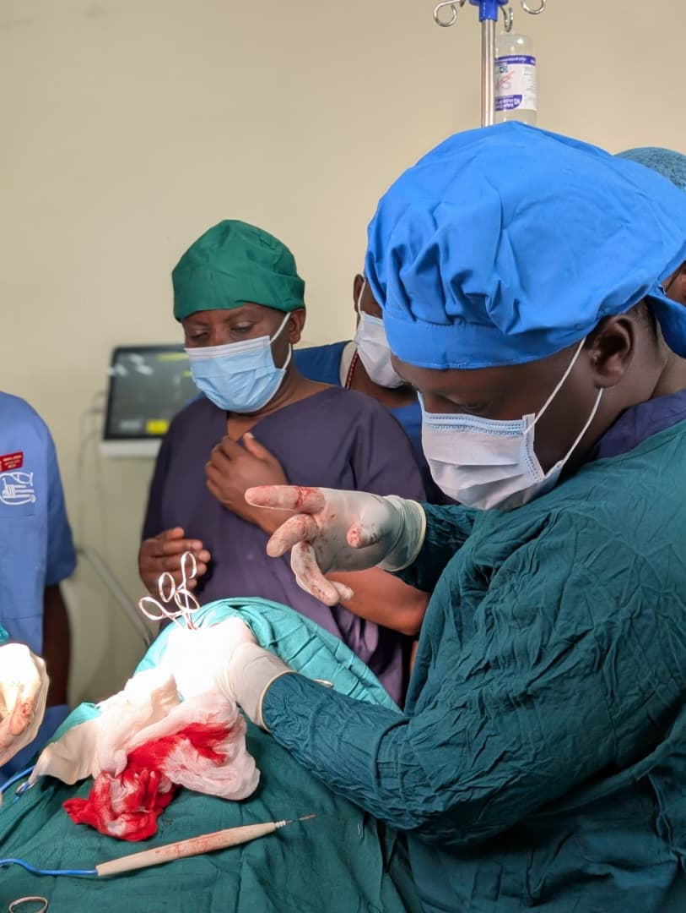
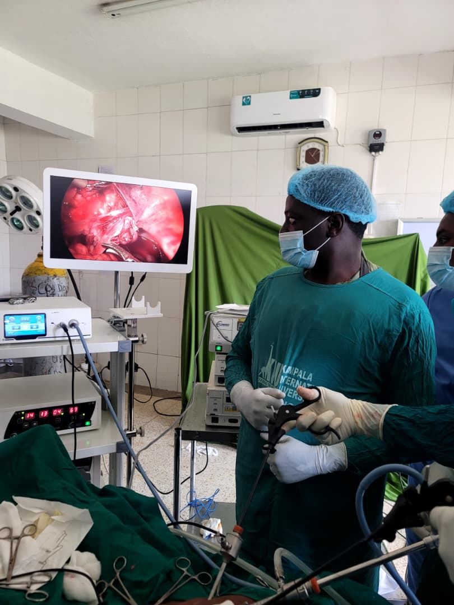
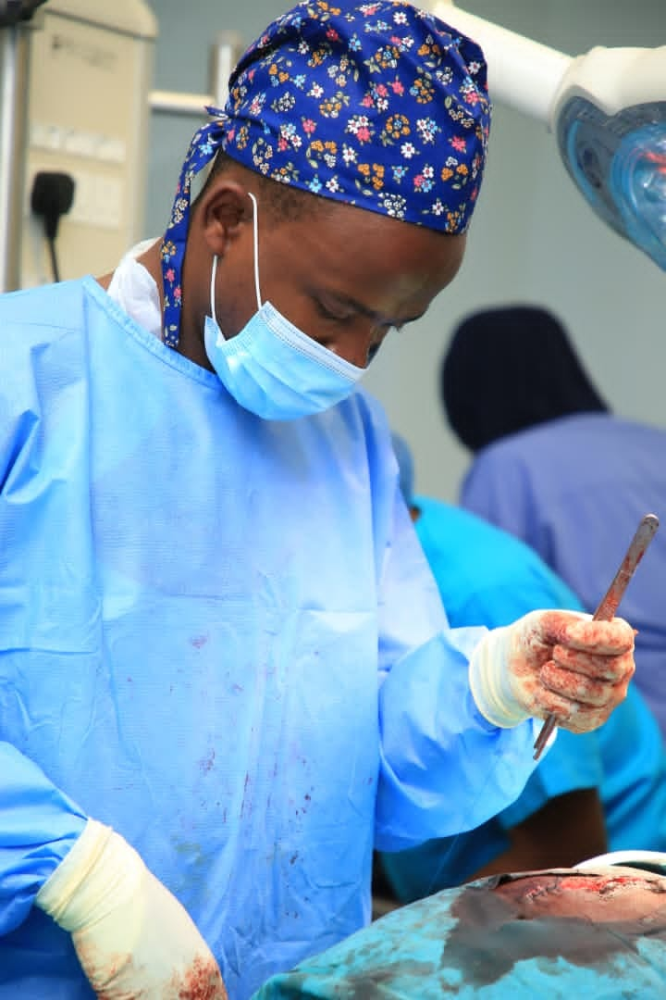

HerniaBack to the garden: a hernia repair story
A 42-year-old farmer from Isingiro lived with a painful groin swelling for two years. The operation that changed that cost him nothing.
These articles illustrate the conditions H4L treats and the barriers patients face. Names are changed and details generalised for privacy; photographs show the clinical team and may not depict the people in each story.

HerniaA 42-year-old farmer from Isingiro lived with a painful groin swelling for two years. The operation that changed that cost him nothing.

HydroceleA giant hydrocele is not only painful. It can make walking, working, and ordinary social life impossible. Hydrocelectomy gave one patient his dignity back.

CholecystectomyRecurrent biliary colic can be managed with planned surgery. Without it, a blocked gallbladder can become an emergency. One mother chose the planned path.

ThyroidA non-malignant goiter can still compress the airway and make swallowing difficult. For one 52-year-old woman, selected thyroidectomy brought immediate relief.
A benign breast lump can still cause fear, pain, and uncertainty. Excision and histopathology gave one young woman a diagnosis and a way forward.
A gift of $175 covers a general surgery case, from the first assessment to the 30-day follow-up review. Reconstructive surgery costs vary by case.